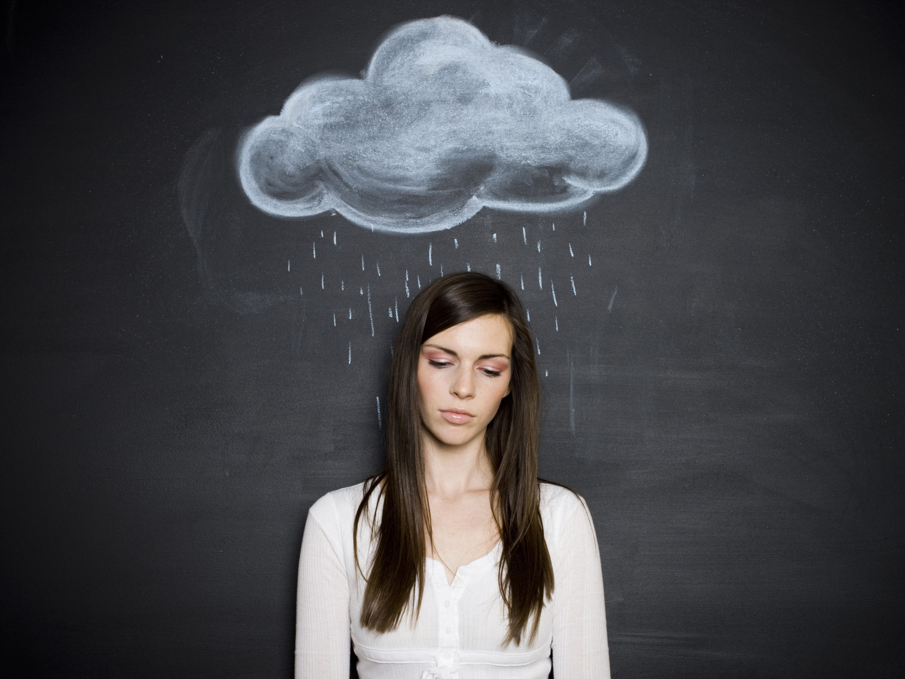
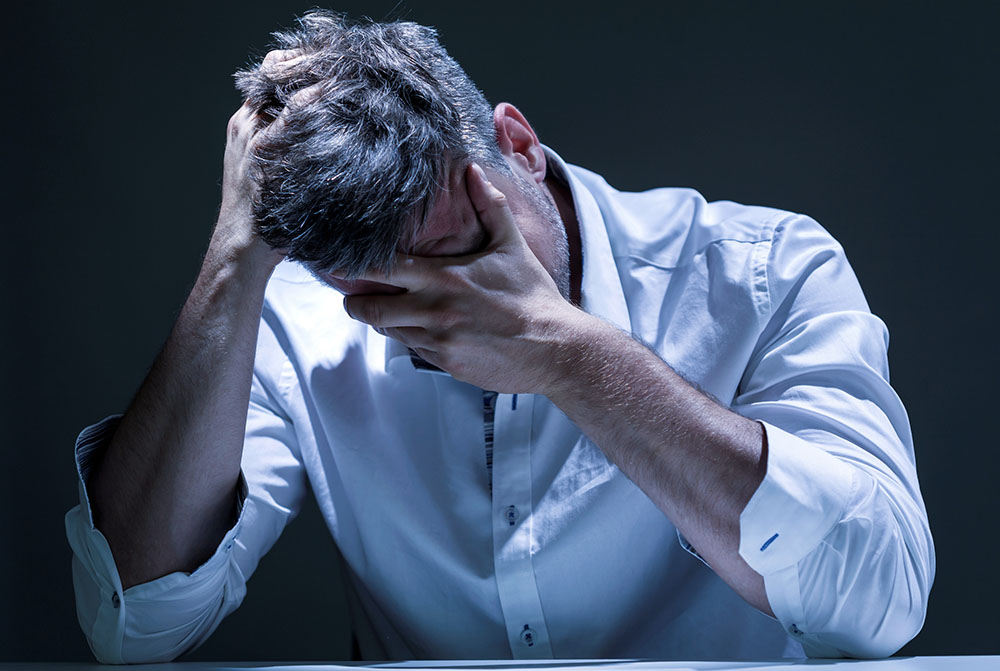

Депре́ссия — психическое расстройство, основными признаками которого являются сниженное — угнетённое, подавленное, тоскливое, тревожное, боязливое или безразличное — настроение и снижение или утрата способности получать удовольствие...
Важно отличать депрессию как клинически выраженное заболевание от депрессивной реакции на психологически понятную ситуацию, когда каждый из нас в течение нескольких минут или часов испытывает сниженное настроение в связи с субъективно значимым событием. Около 16% людей в течение своей жизни хотя бы раз перенесли депрессию. Замечено, что у женщин достоверно чаще диагностируется депрессия, что, вероятно, связано с тем, что женщины подвержены большим нейро-эндокринным изменениям. Это связано с рядом физиологических особенностей женского организма — менструальным циклом, послеродовым или климактерическим периодом, в ходе которых психоэмоциональное состояние может колебаться от нормального до клинически очерченной депрессии. Кроме того, у женщин чаще выявляется депрессия в связи с их гендерными, социальными, психологическими особенностями - например, женщинам проще разговаривать о своем эмоциональном состоянии. Мужчины обычно реже обращаются за помощью к психиатру или психотерапевту, так как им мешают социальные стереотипы: мужчины должны быть рациональными, сильными, «настоящие мужчины не плачут», при этом депрессивные состояния у мужчин находятся в прямой связи с зависимыми формами поведения (алкоголизм, наркомания, игромания, экстремальные виды спорта). Значительно возрастает риск развития депрессивного расстройства в следующих случаях: 1)в пожилом возрасте в связи с потерей смысла жизни (выход на пенсию); 2)когда в детоцентрированной семье вырастают и покидают родителей взрослые дети (синдром «пустого гнезда»); 3)при утрате близкого.
 назад